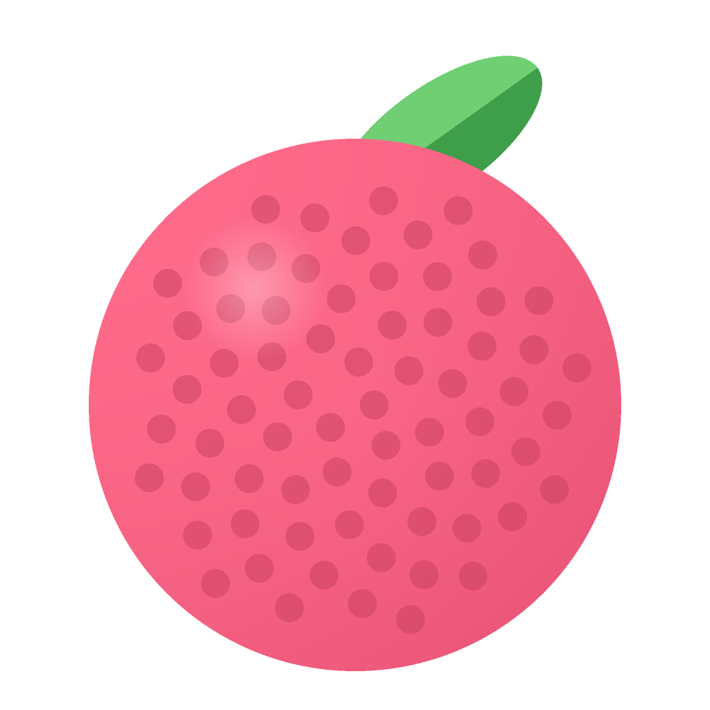
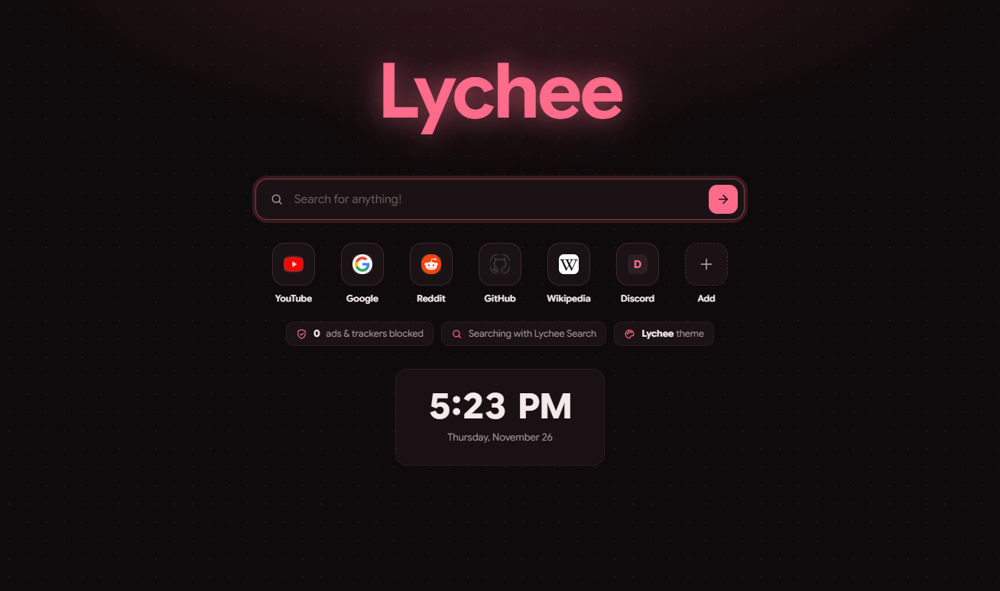
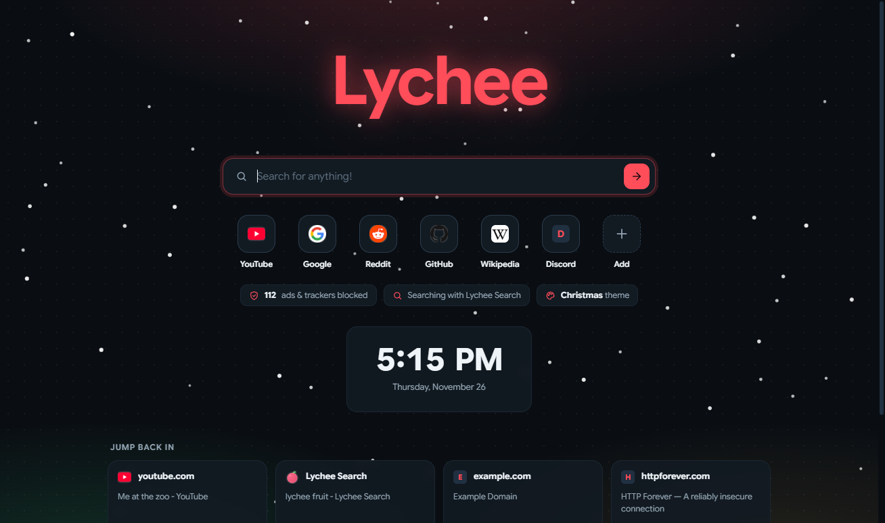
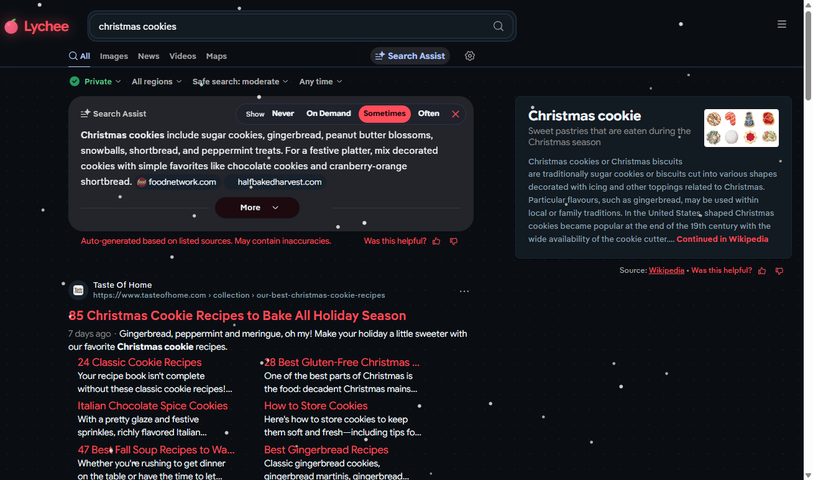
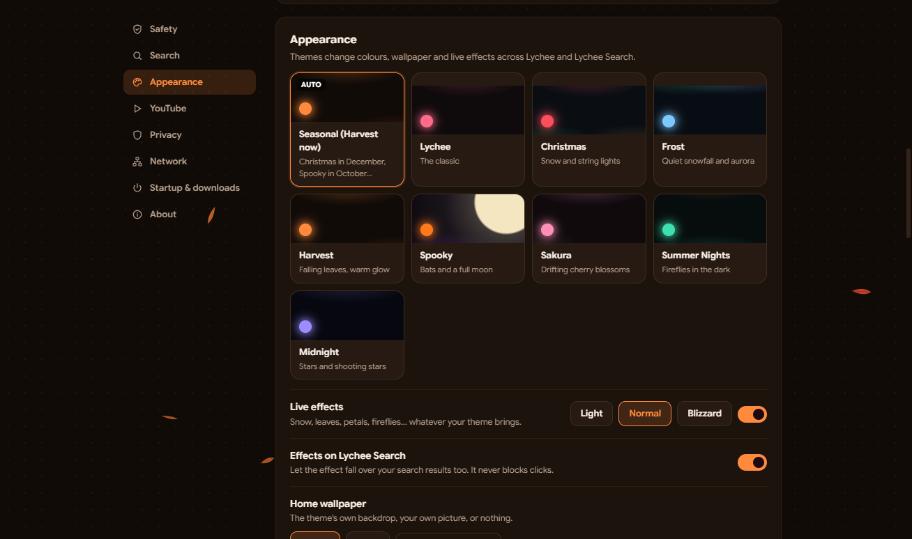
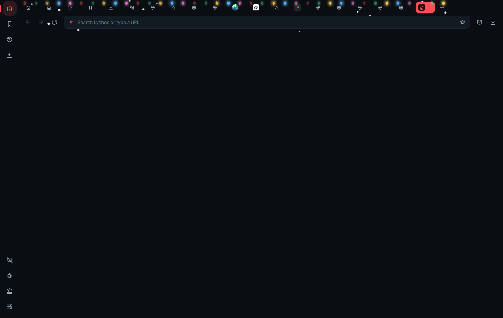

✦
Live seasonal themes
Classic Lychee pink out of the box, plus snow and string lights at Christmas, falling leaves in autumn, bats in October and cherry blossoms in spring. Turn on Seasonal and it switches by itself.

Lychee DownloadA real Chromium browser that's actually fun to use. Live seasonal themes, a built-in ad blocker, YouTube upgrades and privacy tools, all in one dark, glowing package.
Windows 10/11 · macOS 11+ · No account, no tracking

No extensions to hunt down. Lychee ships with the good stuff.
Classic Lychee pink out of the box, plus snow and string lights at Christmas, falling leaves in autumn, bats in October and cherry blossoms in spring. Turn on Seasonal and it switches by itself.
Ambient Light makes the video glow around the player. YouTube follows your Lychee theme, and ads get muted and skipped.
Private search with no tracking, styled to match your theme, with a Google-style image sidebar. Your address bar shows what you searched, not a messy link.
Blocks ads and trackers on every site out of the box, using the same filter lists the big blockers use. One click to turn it off for a page.
Private tabs leave no history or cookies behind. Tor tabs route through the Tor network to hide your IP. HTTPS-only mode and encrypted DNS come switched on.
One key jumps to a boring page and mutes everything; press it again to come back. Disguise the window as Docs or Classroom in the taskbar.
New versions download quietly in the background and install when you restart. The portable version updates itself too.
Big search, your shortcuts, a clock, recent sites and your own wallpaper if you want. Tabs, bookmarks, history and downloads all feel the same.
This page is running Lychee's real theme engine. Pick one.




Free, forever. Pick your system.
Installs just for you: no admin password needed. Updates itself automatically.
Download for Windows Windows 10 & 11 · 64-bitUnzip anywhere, even a USB stick, and run Lychee.exe. Your settings stay in its Profile folder.
Download portable .zip Nothing installed · updates itselfOne app for both Apple Silicon and Intel Macs. Lychee tells you when a new version is out.
Download for Mac macOS 11 or newer · UniversalLychee is free and made by one person, so it isn't signed with a paid certificate yet. Your computer will ask once:
All releases and changelogs are on GitHub.
Yes. Lychee runs on Chromium, the same engine as Chrome, Edge, Brave and Opera, so sites work like they do in Chrome. Lychee adds its own interface, themes and tools on top.
No. There's no account, no analytics and no telemetry. Your history, bookmarks and settings stay on your computer. Lychee only contacts GitHub to check for updates, and you can turn that off.
Completely. No ads (it blocks them), no premium tier.
Code-signing certificates cost money every year. Lychee isn't signed yet, so Windows and macOS ask you to confirm once. See the steps above.
Yes, grab the Windows portable .zip. Everything, including your logins and settings, lives in the Profile folder next to Lychee.exe.